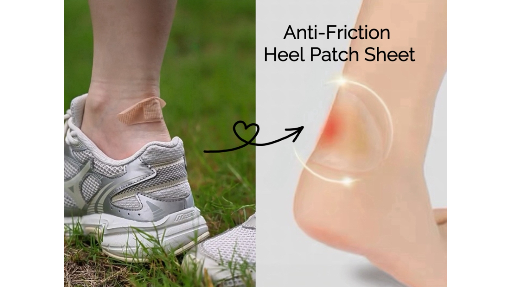

The Ultimate Trail Comfort Guide: How Outdoor Brands Can Stop Blister Complaints and Boost Customer Loyalty
JUN 19, 2026

For anyone planning a multi-day camping trip or a long hiking adventure, the goal is always the same: enjoy the great outdoors. But ask any experienced hiker, and they will tell you that the biggest threat to a perfect trip isn’t a sudden storm—it is a painful blister forming right inside their boot.
For outdoor brands, online retailers, and adventure tour operators, these small trail injuries are a surprisingly big headache. They often lead to high product return rates, bad online reviews, and lost customer loyalty. If a hiker’s feet are bleeding, they will likely blame the boots they bought from you, not their own walking style.
To help your customers stay comfortable on the trail—and protect your business reputation—here is how to handle the real causes of trail friction with the right gear.
The Real Enemy: Friction and Sweaty Socks
Most people think blisters happen just because a shoe rubs against the skin. But the real issue on a long hike is a mix of constant lateral friction (the foot sliding side-to-side inside the boot) and a wet camp environment (sweat and moisture buildup).
When your customers carry heavy backpacks over miles of uneven trails, their feet sweat heavily. This extra moisture makes the skin on their heels soft and highly vulnerable. As the foot shifts inside the damp boot with every single step, the top layer of skin quickly separates from the tissue underneath, creating a fluid-filled blister.
Once a blister bursts in a warm, wet, and enclosed boot, it can easily lead to a secondary skin infection. This can turn a fun weekend camping trip into a medical emergency, leaving the user frustrated with their outdoor gear.
B2B Insight: Ditch Cheap Plasters for Real Trail Shields
Look inside most generic first aid kits on the market, and you will find the same low-cost fillers: standard, flimsy plastic Wound Plasters (basic bandages). In a real wilderness scenario, these cheap bandages sweat off within fifteen minutes of walking. They offer zero cushioning and do nothing to stop the heavy rubbing at the heel.
If you run a Shopify store or an outdoor brand, your reputation depends on the quality of the accessories you provide. If you give customers inadequate first aid items, your brand bears the cost of their bad experience.
That is why GoSafeMed designed its Ultralight Mini, Standard, and Plus outdoor first aid lines around real, messy trail conditions:
- GoSafeMed Anti-Friction Heel Patch Sheet (10*11.5cm / 11 Pre-Cut Pieces): Each kit includes a specialized 10*11.5cm sheet containing 11 pre-cut, multi-shaped pieces tailored for different friction zones of the foot. Built with a 0.15 cm cushioned core to absorb the impact of heavy walking and a 0.05 cm ultra-thin edge that sticks firmly to the skin, these assorted shapes won’t roll or peel off, stopping friction before a blister can even start.
- Double-Sanitizing Protocol: A two-step system for dusty, dirty camp environments: sting-free BZK Pads to wipe away trail dirt, paired with high-concentration Iodine Swabs to deeply sterilize the skin before applying the patch.
- Nylon 210D Water-Resistant Casing (Standard & Plus): Sterile items are sealed inside a heavy-duty Nylon 210D casing, helping supplies stay 100% dry even if a backpack gets soaked by mud or heavy rain.
Conclusion: Better Gear, Happier Customers
In the competitive B2B outdoor market, success is in the details. By upgrading the first aid solutions you offer to your clients or pack into your inventory, you actively prevent bad trail experiences, reduce shoe return rates, and build unshakeable customer retention.
Equip your audience for their next big adventure. Explore the GoSafeMed Outdoor First Aid Series today.